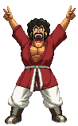
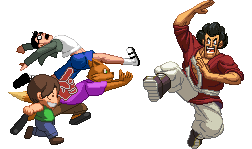

activate Champion Mode (LV2)
Activating Champion Mode gives Satan a massive confidence boost.
This changes a few things, gameplay-wise.
- At activation, you will see the silouettes of a crowd appearing on the bottom of the screen, cheering for their Champion.
- Pressing Taunt has Satan hyping up the crowd even more. Hype them enough to level up.
- Satan Stance counter animation changes and hypes up the crowd when succesful.
- Dynamite Kick comes more awesome. Hitting with it also hypes up the crowd.
- In the Capsule Surprise, you won't get any items from the 'Bad' catagory.
- Satan gains access to the Crowd Goes Wild.
- Present For You costs Lv2 instead of Lv3 and cancels the mode.
- You gain unique Finishers to the Present For You.
- At activation, you will see the silouettes of a crowd appearing on the bottom of the screen, cheering for their Champion.
- Pressing Taunt has Satan hyping up the crowd even more. Hype them enough to level up.
- Satan Stance counter animation changes and hypes up the crowd when succesful.
- Dynamite Kick comes more awesome. Hitting with it also hypes up the crowd.
- In the Capsule Surprise, you won't get any items from the 'Bad' catagory.
- Satan gains access to the Crowd Goes Wild.
- Present For You costs Lv2 instead of Lv3 and cancels the mode.
- You gain unique Finishers to the Present For You.

Hype!
Without his loyal fans, Satan isn't really feeling it...that's why he has this move,
to hype up the crowd, which boosts his confidence and in turn, his damage-output!
On the maximum level, the crowd will begin chanting "Satan! Satan! Satan!"

The Crowd Goes Wild!
Satan's loyal fans can't contain themselves anymore and storm onto the battlefield,
causing Satan to make a temporary retreat while the fan crowd tries to catch him!
This wild crowd of people can run over the opponent, stomping on them as they pass.
The more your Champion Bar is filled, the larger the crowd will be and thus,
the more hits and damage it can do to the opponent. You can supercancel into this move.
Performing this move cancels the Champion Mode.